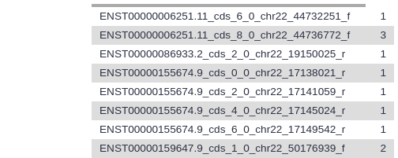
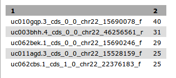
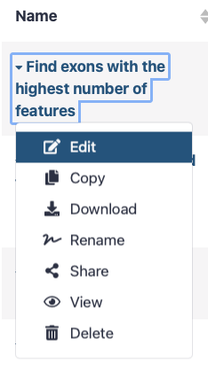
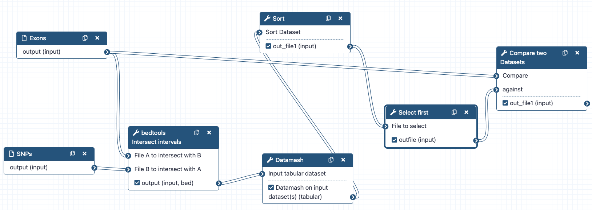
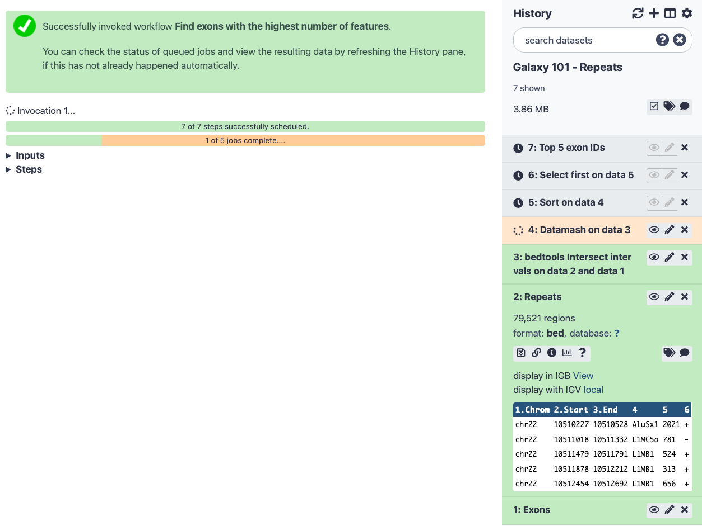

This practical aims to familiarize you with the Galaxy user interface. It will teach you how to perform basic tasks such as importing data, running tools, working with histories, creating workflows, and sharing your work.
comment Note: results may vary
Your results may be slightly different from the ones presented in this tutorial
due to differing versions of tools, reference data, external databases, or
because of stochastic processes in the algorithms.
We start with the question: In human chromosome 22, which exon has the highest number of single nucleotide polymorphisms (SNPs)?
comment Background
Not everyone has the same background and that’s ok! You may have studied different organisms with different gene models, or you may not be familiar with the biological aspect at all. The biological background is not necessary for following this tutorial, we just like to provide research context for any tutorial. Here are brief explanations of some of the concepts mentioned in this tutorial:
Nucleotides are the A, C, T, and Gs that make up DNA.
A Chromosomes can be thought of as a very long piece of DNA (string of A, C, T, Gs) Some organisms have chromosomes, in this tutorial we will use Human chromosome number 22.
Features are regions of the chromosome that are interesting for one reason or another. Some examples of features include genes, terminators, transcription start sites, and repeat regions.
Genes are one kind of interesting feature, a region that will be transcribed into RNA before being translated into proteins.
Exons are part of the eukaryotic gene model. A gene is a complex structure with numerous segments that are removed before the the gene is transcribed into an RNA. The exons are the coding regions, the regions that will appear in the final protein product.
Figure 1: An original piece of DNA containing introns and exons has the introns cut out before the exons are joined together to form the mRNA. (Image from WikiMedia, under the Public Domain)
SNP stands for single-nucleotide polymorphism and is pronounced like the English word “snip”. SNPs are single nucleotide differences between a sequenced individual compared to some reference sequence; where one individual might have an A, another could have a C in that position. Databases of SNPs have been created for many organisms and they include any single nucleotide deviation from the reference sequence which appears in some percentage of the population (e.g. >1%). These are often especially interesting to geneticists as the causes of certain inheritable diseases.
You may be familiar with the UCSC Genome Browser or another resource like it, and know that you can find the data there.
But even with your data in hand, you stll have the question: “how do I actually compute this?” There is really a straightforward answer: Galaxy. So let’s try it…
Browse to your favourite Galaxy instance and log in or register. The Galaxy interface consists of three main parts:
The available tools are listed on the left
Your analysis history is recorded on the right
The central panel will let you run analyses and view outputs
hands_on Hands-on: Create history
Make sure you start from an empty analysis history.
tip Tip: Creating a new history
Click the new-history icon at the top of the history panel
If the new-history is missing:
Click on the galaxy-gear icon (History options) on the top of the history panel
Select the option Create New from the menu
Rename your history to be meaningful and easy to find. You can do this by clicking on the title of the history (which by default is Unnamed history) and typing Galaxy 101 as the name. Do not forget to hit the Enter key on your keyboard to save it.
Locating Exons
First we need to get some data into our history. You can upload files from your computer, or Galaxy can also fetch data directly from external sources. We know UCSC has exon locations for humans and we can use Galaxy to import the data for chromosome 22, directly from the UCSC table browser.
hands_on Hands-on: Upload SNPs and Exons
At the top of the Tools panel (on the left), click galaxy-uploadUpload
This brings up a box:
Click Paste/Fetch data and paste in the following URLs in the box that appears.
When they’re ready, renamegalaxy-pencil the datasets to Exons and SNPs, respectively.
tip Tip: Renaming a dataset
Click on the galaxy-pencilpencil icon for the dataset to edit its attributes
In the central panel, change the Name field
Click the Save button
For this tutorial, we made the input datasets available on Zenodo for you. However, these datasets can also obtained directly from UCSC, without leaving Galaxy.
Below we describe how you can do this, but it is not necessary for this tutorial. Note that since the data in UCSC is updated frequently, you might get slightly different results in the rest of this tutorial if you use these files.
tip Optional: Obtaining the Data directly from UCSC
This tool works a bit differently than most Galaxy tools, but if you wish to obtain the newest data from UCSC, you can do that as follows:
hands_on Hands-on: Obtaining Exons from UCSC
UCSC Maintool table browser:
In the tool menu, navigate to Get Data -> UCSC Main - table browser
You will be taken to the UCSC table browser, which looks something like this:
Now set the following parameters:
“clade”: Mammal
“genome”: Human
“assembly”: Dec. 2013 (GRCh38/hg38)
“group”: Genes and Gene Predictions
“track”: GENCODE v32
“table”: knownGene
param-text“region” should be changed to position with value chr22
“output format” should be changed to BED - browser extensible data
param-check“Send output to” should have the option Galaxy checked
comment Comment
If the “table” drop down menu does not show the knownGene option. Set “group” to All tables and scroll down.
Click on the get output button and you will see the next screen:
Change Create one BED record per to Coding Exons and then click on the Send query to Galaxy button.
comment Comment
After this you will see your first history item in Galaxy’s right panel. It will go through
the gray (preparing/queued) and yellow (running) states to become green (success):
When the dataset is green, click on the galaxy-eye (eye) icon to view the contents of the file. It should look something like this:
Each line represents an exon, the first three columns are the genomic location, and the fourth column contains the name of the exon.
Let’s rename our dataset to something more recognizable.
Click on the galaxy-pencilpencil icon for the dataset to edit its attributes
In the central panel, change the Name field to Exons
Click the Save button
Your history should now look something like this:
We now have information about the exon locations, but our original question was which exon contains the largest number of SNPs, so let’s get some information about SNP locations from UCSC as well:
hands_on Hands-on: Obtaining SNPs from UCSC
Again open the UCSC Main - table browser tool and set the following parameters
UCSC Maintool table browser:
“group” should be changed to Variation
param-text“region” should be changed again to position with value chr22
“output format” should be changed again to BED - browser extensible data
The “track” setting shows the version of the SNP database to get. In this example it is version 150, but you may select the latest one. Your results may vary slightly from the ones in this tutorial when you select a different version, but in general it is a good idea to select the latest version, as this will contain the most up-to-date SNP information.
Click on the get output button to find a form similar to this:
Make sure that “Create one BED record per” is set to Whole Gene (Whole Gene here really means Whole Feature), and click on Send query to Galaxy. A second item will appear in your analysis history.
Now renamegalaxy-pencil your new dataset to SNPs so we can easily remember what the file contains.
Analysis
Find exons with the most SNPs
Our objective is to find which exon contains the most SNPs. Therefore we have to intersect the file with the exon locations with the file containing the SNP locations (here “intersect” is just a fancy word for printing SNPs and exons that overlap side-by-side).
comment Search bar
Different Galaxy servers may have tools available under different sections, therefore it is often useful to use the search bar at the top of the tool panel to find your tool.
Additionally different servers may have multiple, similarly named tools which accomplish similar functions. For these tutorials, you should select precisely the one that is described. However, in your real analyses, you’ll need to search among the various options to find the one that works for you.
hands_on Hands-on: Finding Exons
JoinTool: toolshed.g2.bx.psu.edu/repos/devteam/join/gops_join_1/1.0.0 the intervals of two datasets side-by-side:
Enter the word join in the search bar of the tool panel, and select the
tool named Join - the intervals of two datasets side-by-side
“Join”: Select Exons
“With”: Select SNPs
“with min overlap”: 1
“Return”: Only records that are joined (INNER JOIN), which means that only matches are included in the output (i.e. only exons with SNPs in it and only SNPs that fall in exons)
tip How do I use this tool?
All Galaxy tools include documentation. If you scroll down on this page, you will find the help of the tool.
Click Execute
Wait for the job to finish
View the resulting file (with the galaxy-eye (eye) icon). If everything went okay, you should see a file that looks similar to this:
Remember that variations are possible due to using different versions of UCSC databases: as long as you have similar looking columns you did everything right!
comment If things didn’t work…
Did the Join tool error with a memory failure? Or is this step executing for a long time? Most likely a setting was missed when extracting the data from the UCSC Table Browser. Try again, double checking that:
For both SNP and EXON: “region” is actually changed to position with value chr22
For EXON: “Create one BED record per”Coding Exons is selected (notWhole Gene as for the SNP data)
Carefully inspect the remaining Table Browser settings if these two most common reasons for problems were correct in your tool executions
Let’s take a look at this dataset. The first six columns correspond to the exons, and the last six columns correspond to the SNPs. Column 4 contains the exon IDs, and column 10 contains the SNP IDs. In our screenshot you see that the first lines in the file all have the same exon ID but different SNP IDs, meaning these lines represent different SNPs that all overlap the same exon.
question Question
For the first 3 exons in your file, what is the number of SNPs that fall into that exon?
solution Solution
At the time of writing, for hg38/GENCODE v29, joined with “Common SNPs(151)”, using ctrl-f (cmd-f on Mac OS) to look for how many times each is used:
Gene
Occurences
ENST00000252835.5_cds_0_0_chr22_15528159_f
24
ENST00000643195.1_cds_0_0_chr22_15528192_f
24
ENST00000343518.10_cds_0_0_chr22_15690078_f
40
Count the number of SNPs per exon
Since each line in our file represents a single overlap between SNP and exon, we can find the total number of SNPs in an exon, simply by counting the number of lines that have the same exon ID. So let’s do this for all the exons in our file:
hands_on Hands-on: Counting SNPs
GroupTool: Grouping1 data by a column and perform aggregate operation on other columns:
“Select data”: select the output dataset from Jointool
“Group by column”: Column: 4 (the column with the exon IDs)
“Insert Operation”:
1: Operation
“Type”: Count
“On column”: Column: 4
Click Execute to perform the grouping. Your new output dataset will look something like this:

This file contains only two columns. The first contains the exon IDs, and the second the number of times that exon ID appeared in the file - in other words, how many SNPs were present in that exon.
question Question
How many exons are there in total in your file?
solution Solution
Each line now represents a different exon, so you can see the answer to this when you expand the history item, as in the image above. The exact number you see for your dataset may be slightly different due to the updates to the exon and SNPs information in UCSC.
Sort the exons by SNPs count
Now that we have a list of all exons, and the number of SNPs they contain, we would like to know which exon has the highest number of SNPs. We can do this by sorting the file on the second column.
hands_on Hands-on: Sorting
SortTool: toolshed.g2.bx.psu.edu/repos/bgruening/text_processing/tp_sort_header_tool/1.1.1 data in ascending or descending order:
“Sort Query”: Output from Grouptool
“Column Selections”:
1: Column Selections
“on column”: Column: 2
“in”: Descending order
“Flavor”: Fast numeric sort (-n)
Click Execute
Examine the output file.
The file should look similar to before sorting, but now the exons with the highest number of SNPs are at the top.
question Question
Which exon has the highest number of SNPs in your file?
solution Solution
When this tutorial was last updated, ENST00000343518.10_cds_0_0_chr22_15690078_f had 40 SNPs.
Keep in mind this may depend on your settings when getting the data from UCSC.
Select the top five exons
Let’s say we want a list with just the top-5 exons with highest number of SNPs.
hands_on Hands-on: Select first
Select firstTool: Show+beginning1 lines from a dataset:
“Select first”: 5
“from”: The output from Sorttool
Click Execute
Examine the output file, this should contain only the first 5 lines of the previous dataset.

Recovering exon info
Congratulations! You have now determined which exons on chromosome 22 have the highest number of SNPs, but what else can we learn about them? One way to learn more about a genetic location is to view it in a genome browser. However, in the process of getting our answer, we have lost information about the location of these exons on the chromosome. But fear not, Galaxy saves all of your data, so we can recover this information quite easily.
hands_on Hands-on: Compare two Datasets
Compare two DatasetsTool: comp1 to find common or distinct rows:
“Compare”: Exons
“Using column”: Column: 4
“against”: the output from Select firsttool
“Using column”: Column: 1
“to find”: Matching rows of 1st dataset
Click Execute
Examine your output file. It should contain the locations of your top 5 exons:
Displaying data in UCSC genome browser
A good way to learn about these exons is to look at their genomic surrounding. This can be done by using genome browsers. Galaxy can launch a genome browser such as IGV on your local machine, and it can connect to online genome browsers as well. An example of such an online genome browser is the UCSC genome browser.
hands_on Hands-on: UCSC genome browser
First, check that the database of your latest history dataset is hg38. If not, click on the galaxy-pencil pencil icon and modify the Database/Build: field to Human Dec. 2013 (GRCh38/hg38) (hg38).
tip Tip: Changing Database/Build (dbkey)
Click on the galaxy-pencilpencil icon for the dataset to edit its attributes
In the central panel, change the Database/Build field
Select your desired database key from the dropdown list: hg38
Click the Save button
Second, check that the format of your latest history dataset is bed. If not, click on the galaxy-pencil pencil icon and modify the Datatype field to bed.
tip Tip: Changing the datatype
Click on the galaxy-pencilpencil icon for the dataset to edit its attributes
In the central panel, click on the galaxy-chart-select-dataDatatypes tab on the top
Select bed
Click the Change datatype button
To visualize the data in UCSC genome browser, click on display at UCSC main option visible when you expand the history item.
This will upload the data to UCSC as custom track. To see your data look at the User Track near the top. You can enter the coordinates of one of your exons at the top to jump to that location.
UCSC provides a large number of tracks that can help you get a sense of your genomic area, it contains common SNPs, repeats, genes, and much more (scroll down to find all possible tracks).
Galaxy management
In Galaxy your analyses live in histories such as your current one. Histories can be very large, and you can have as many histories as you want. You can control your histories (switching, copying, sharing, creating a fresh history, etc.) in the galaxy-gearHistory Options menu on the top of the history panel:
If you create a new history, your current history does not disappear. If you would like to list all of your histories just use the galaxy-columns Multi-history view:
Here you can:
switch between different histories,
delete a history,
purge it (i.e. permanently delete it, this action cannot be reversed)
copy histories
copy datasets between histories (by dragging and dropping)
You can always return to your analysis view by clicking on Analyze Data in the top menu bar.
Convert your analysis history into a workflow
When you look carefully at your history, you can see that it contains all steps of our analysis, from the beginning to the end. By building this history we have actually built a complete record of our analysis with Galaxy preserving all parameter settings applied at every step. But when you receive new data, or a new report is requested, it would be tedious to do each step over again. Wouldn’t it be nice to just convert this history into a workflow that we will be able to execute again and again?
Galaxy makes this very easy with the Extract workflow option. This means any time you want to build a workflow, you can just perform the steps once manually, and then convert it to a workflow, so that next time it will be a lot less work to do the same analysis.
hands_on Hands-on: Extract workflow
Clean up your history. If you had any failed jobs (red), please remove those datasets from your history by clicking on the x button. This will make the creation of a workflow easier.
Go to the history galaxy-gear History Options menu and select the Extract Workflow option.
The central panel will change as shown below and you will be able to choose which steps to include/exclude and how to name the newly created workflow.
Rename the workflow to something descriptive, for example Find exons with the highest number of interactions.
While we created this workflow initially to analyse SNPs, if we had similarly formatted datasets we could use this workflow to find those interactions as well.
If there are any steps that shouldn’t be included in the workflow, you can uncheck them.
Click on the Create Workflow button near the top.
You will get a message that the workflow was created. But where did it go?
Click on Workflow in the top menu of Galaxy. Here you have a list of all your workflows. Your newly created workflow should be listed at the top:
The workflow editor
We can examine the workflow in Galaxy’s workflow editor. Here you can view/change the parameter settings of each step, add and remove tools, and connect an output from one tool to the input of another, all in an easy and graphical manner. You can also use this editor to build workflows from scratch.
hands_on Hands-on: Extract workflow
Click on the triangle to the right of your workflow name.

Select Edit to launch the workflow editor. You should see something like this:

When you click on a workflow step, you will get a view of all the parameter settings for that tool on the right-hand side of your screen.
tip Hiding intermediate steps
When a workflow is executed, the user is usually primarily interested in the final product and not in all intermediate steps. By default all the outputs of a workflow will be shown, but we can explicitly tell Galaxy which outputs to show and which to hide for a given workflow. This behaviour is controlled by the little checkbox in front of every output dataset:
Re-arrange the boxes so you can clearly see the data flow. The default automatic layout hides some of the connections due to overlapping and box placement.
Make sure the check boxes for out_file1 in the Select First and Compare two Datasets tools are selected. Make sure that everything else is not selected.
Now, when we run the workflow, we will only see the final two outputs, i.e. the table with the top-5 exons and their SNP counts, and the file with exons ready for viewing in a genome browser.
The box named Exons is named ok, but we want to change SNPs since this workflow is not specific to SNPs
Click on the box corresponding to the SNPs input dataset
change the Label to Features on the right-hand side of your screen.
Let’s also rename the outputs:
Click on the Select first tool in the workflow editor
In the menu on the right click on Configure Output: 'out_file1'
Under Rename dataset, and enter a descriptive name for the output dataset like Top 5 exon IDs
Repeat this for the output of the Compare two Datasets tool, naming it Top 5 exons
Save your workflow (important!) by clicking on the galaxy-save icon at the top right of the screen.
Return to the analysis view by clicking on Analyze Data at the top menu bar.
comment Comments
We could validate our newly built workflow by running it on the same input datasets that we used at the start of this tutorial, in order to make sure we do obtain the same results.
Run workflow on different data
Now that we have built our workflow, let’s use it on some different data. For example, let’s find out which exons have the highest number of repeat elements.
hands_on Hands-on: Run workflow
Create a new history and give it a name.
tip Tip: Creating a new history
Click the new-history icon at the top of the history panel
If the new-history is missing:
Click on the galaxy-gear icon (History options) on the top of the history panel
Select the option Create New from the menu
We will need the list of exons again. We don’t have to get this from UCSC again, we can just copy it from our previous history. The easiest way to do this is to go to the galaxy-columns history overview. Here you can just drag and drop datasets from one history to another.
Click Analyze Data at the top to return to the main analysis window
Open the Galaxy Upload Manager (galaxy-upload on the top-right of the tool panel)
Select Paste/Fetch Data
Paste the link into the text field
Press Start
Close the window
By default, Galaxy uses the URL as the name, so rename the files with a more useful name.
tip Obtaining the Data from UCSC
Again, for reproducibility we obtain the data from Zenodo ensuring that the results will never change, allowing us to do good science! However if you wish to obtain UCSC data:
hands_on Hands-on: Obtaining Exons from UCSC
UCSC Maintool table browser:
In the tool menu, navigate to Get Data -> UCSC Main - table browser
Now set the following parameters:
“clade”: Mammal
“genome”: Human
“assembly”: Dec. 2013 (GRCh38/hg38)
“group”: Repeats
param-text“region” should be changed to position with value chr22
“output format” should be changed to BED - browser extensible data
param-check“Send output to” should have the option Galaxy checked
Click on get output and then Send query to Galaxy on the next screen.
Renamegalaxy-pencil the dataset to Repeats
Open the workflow menu (top menu bar). Find the workflow you made in the previous section, and select the option Run.
tip Tip: Running a workflow
Click on Workflow on the top menu bar of Galaxy. You will see a list of all your workflows.
Click on the workflow-run (Run workflow) button next to your workflow
Configure the workflow as needed
Click the Run Workflow button at the top-right of the screen
You may have to refresh your history to see the queued jobs
The central panel will change to allow you to configure and launch the workflow.
Select appropriate datasets for the inputs as shown below, then scroll down and click Run workflow.
param-file“Exons”: the Exons file you copied from our previous history
param-file“Features”: the Repeats file we downloaded from UCSC
comment Potential workflow issues
Galaxy validates the workflow inputs to ensure they’re correct. It may show a validation error at the start, until you select Exons for the Exons input, and your repeats for the Features input.
If you see an “Invalid column choice” error, you need to specify which column you want to use. If you have to type the column number, you need to type just the number e.g. 4 (not Column 4 or anything else).
Once the workflow has started, you will initially be able to see all its steps, but the unimportant intermediates will disappear after they complete successfully:

comment Unhiding hidden datasets
Because most intermediate steps of the workflow were hidden, once it is finished you will only see the final two datasets. If we want to view the intermediate files after all, you can click the “## hidden” just below the history’s name.
question Questions
Which exon had the highest number of repeats? How many repeats were there?
Share your work
One of the most important features of Galaxy comes at the end of an analysis. When you have published striking findings, it is important that other researchers are able to reproduce your in-silico experiment. Galaxy enables users to easily share their workflows and histories with others.
To share a history, click on the galaxy-gear icon in the history panel and select Share or Publish. On this page you can do 3 things:
Make History Accessible via Link. This generates a link that you can give out to others. Anybody with this link will be able to view your history.
Make History Accessible and Publish. This will not only create a link, but will also publish your history. This means your history will be listed under Shared Data → Histories in the top menu.
Share with a user. This will share the history only with specific users on the Galaxy instance.
comment Permissions
Different servers have different default permission settings. Some servers create all of your datasets completely private to you, while others make them accessible if you know the secret ID.
Be sure to select Also make all objects within the History accessible whenever you make a history accessible via link, otherwise whomever you send your link to might not be able to see your history.
hands_on Hands-on: Share history and workflow
Share one of your histories with your neighbour.
See if you can do the same with your workflow!
Find the history and/or workflow shared by your neighbour. Histories shared with specific users can be accessed by those users in their galaxy-gear history menu under Histories shared with me.
Conclusion
trophy Well done! You have just performed your first analysis in Galaxy. You also created a workflow from your analysis so you can easily repeat the exact same analysis on other datasets. Additionally you shared your results and methods with others.
keypoints Key points
Galaxy provides an easy-to-use graphical user interface for often complex command-line tools
Galaxy keeps a full record of your analysis in a history
Workflows enable you to repeat your analysis on different data
Galaxy can connect to external sources for data import and visualization purposes
Galaxy provides ways to share your results and methods with others
Feedback
Did you use this material as an instructor? Feel free to give us feedback on how it went.
Batut et al., 2018 Community-Driven Data Analysis Training for Biology Cell Systems 10.1016/j.cels.2018.05.012
details BibTeX
@misc{introduction-galaxy-intro-101,
author = "Saskia Hiltemann and Nicola Soranzo and Clemens Blank and Anton Nekrutenko and Björn Grüning and Anne Pajon and Helena Rasche",
title = "Galaxy 101 (Galaxy Training Materials)",
year = "2021",
month = "01",
day = "06"
url = "\url{/training-material/topics/introduction/tutorials/galaxy-intro-101/tutorial.html}",
note = "[Online; accessed TODAY]"
}
@article{Batut_2018,
doi = {10.1016/j.cels.2018.05.012},
url = {https://doi.org/10.1016%2Fj.cels.2018.05.012},
year = 2018,
month = {jun},
publisher = {Elsevier {BV}},
volume = {6},
number = {6},
pages = {752--758.e1},
author = {B{\'{e}}r{\'{e}}nice Batut and Saskia Hiltemann and Andrea Bagnacani and Dannon Baker and Vivek Bhardwaj and Clemens Blank and Anthony Bretaudeau and Loraine Brillet-Gu{\'{e}}guen and Martin {\v{C}}ech and John Chilton and Dave Clements and Olivia Doppelt-Azeroual and Anika Erxleben and Mallory Ann Freeberg and Simon Gladman and Youri Hoogstrate and Hans-Rudolf Hotz and Torsten Houwaart and Pratik Jagtap and Delphine Larivi{\`{e}}re and Gildas Le Corguill{\'{e}} and Thomas Manke and Fabien Mareuil and Fidel Ram{\'{\i}}rez and Devon Ryan and Florian Christoph Sigloch and Nicola Soranzo and Joachim Wolff and Pavankumar Videm and Markus Wolfien and Aisanjiang Wubuli and Dilmurat Yusuf and James Taylor and Rolf Backofen and Anton Nekrutenko and Björn Grüning},
title = {Community-Driven Data Analysis Training for Biology},
journal = {Cell Systems}
}
congratulations Congratulations on successfully completing this tutorial!
 Saskia Hiltemann,
Saskia Hiltemann,  Nicola Soranzo,
Nicola Soranzo,  Clemens Blank,
Clemens Blank,  Anton Nekrutenko,
Anton Nekrutenko,  Björn Grüning,
Björn Grüning,  Anne Pajon,
Anne Pajon,  Helena Rasche
Helena Rasche


{kind=link}